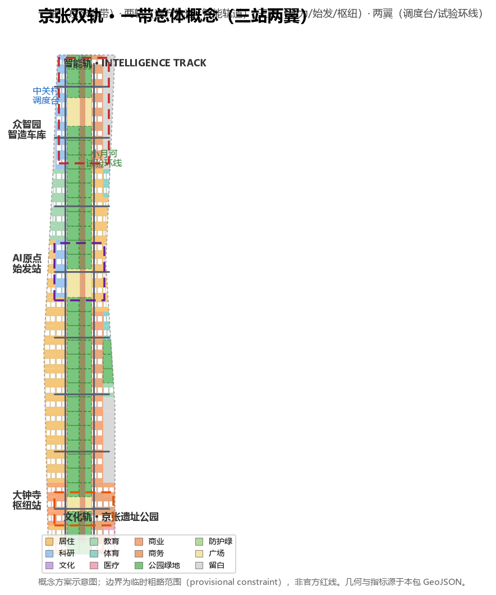
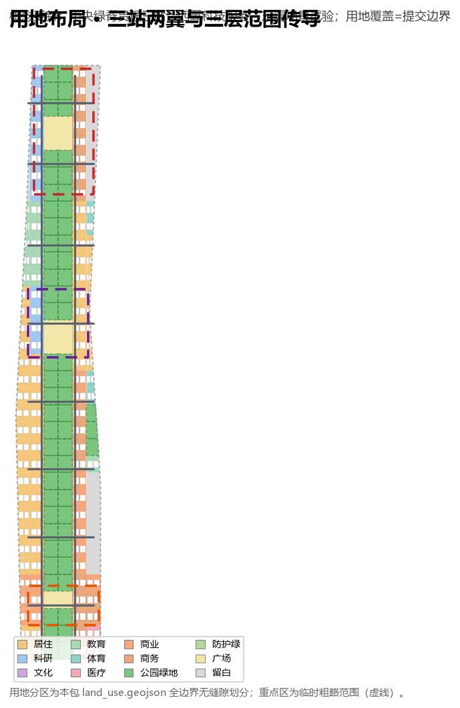
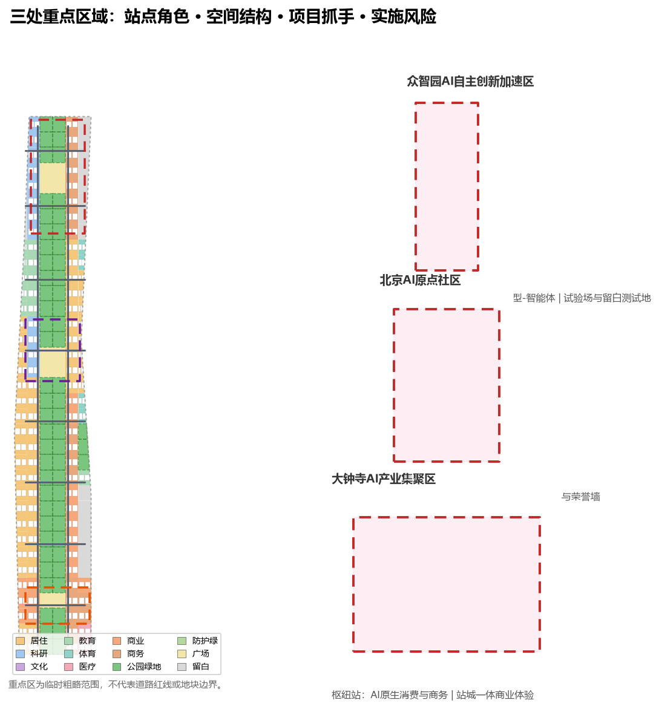
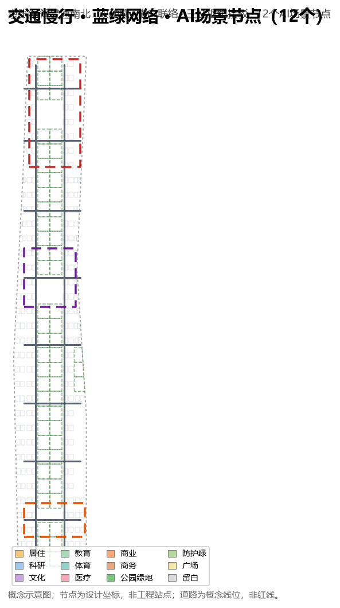
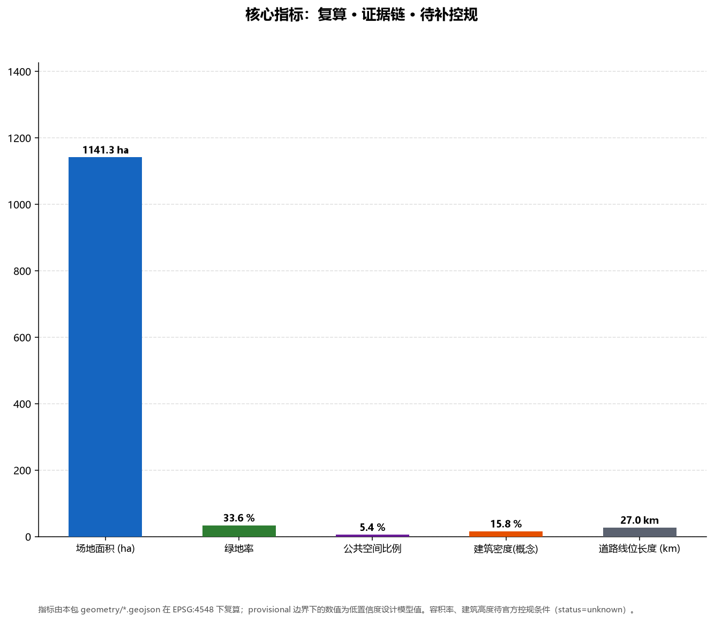

Jingzhang Double Track — Concept Urban Design for the Centennial Jing-Zhang AI Innovation Belt
JINGZHANG DOUBLE TRACK: a heritage rail × intelligence rail concept where two tracks run in parallel — one spine, two tracks, three stations, two wings, and 12 AI scenario nodes. Land use, green and public space, conceptual massing, road alignments and phasing are recomputed from the submitted GeoJSON in EPSG:4548; the boundary is a provisional constraint.
Jingzhang Double Track · Concept Urban Design for the Centennial Jing-Zhang AI Innovation Belt
Design Basis and Source List
This proposal takes as its primary basis the Pre-qualification Announcement for the International Urban Design Solicitation for the Centennial Jing-Zhang AI Innovation Belt, published by the Haidian Branch of the Beijing Municipal Commission of Planning and Natural Resources, which defines the three scope levels, the area constraints of 43.6 km², 11.4 km² and 368.4 ha, the three key areas and the design tasks SourceStandard. The excerpted Agent Open-Call Taskbook is the second basis; it adds the three positionings, five functions, three areas and two wings, the six agent tasks (agent.1–agent.6) and the uniform boundary clause SourceStandard.
Because no official polygon has been published, the package uses the maintainers' provisional boundary and key-area polygons derived from the announcement's textual extents and announced areas (provisional_boundaries.geojson) SourceSource. This boundary supports generation, display, self-check and discussion only: geometry_role=provisional_constraint, official_boundary=false; it is not an official redline, an approval basis or a basis for precise area claims. When official polygons arrive, the site boundary, key areas, land use, roads, green space, public space, buildings, phasing and every area metric must be recalculated Source.
Data-use boundaries follow data/source_registry.json: formal conclusions rely only on registered formal-ready sources; background and provisional material does not support spatial control claims SourceSource. The submitted boundary and site-area recomputation are evidenced in Spatial data and the site_area_sqm metric Metric; the three key areas in Spatial data and the key_area_count metric Metric.

Three-Level Scope Framework
The three scopes are transmitted from strategy to drawings. The coordinated research area (43.6 km²; north to the Fifth Ring Road, east to the Jingzang Expressway, south to Xizhimen Outer Street, west to Wanquanhe Road) answers how the AI ecosystem and future city form are organized; the overall design area (about 11.4 km²; the submitted boundary is provisional) answers how industrial space, urban renewal, transport, municipal infrastructure and city character are mapped; the key detailed-design area (368.4 ha: Zhongzhiyuan 192.1 ha, Origin 104.3 ha, Dazhongsi 72.0 ha) answers how the three areas reach detailed design depth SourceDepth.
The three layers are not three unrelated drawings. The innovation-chain judgment of the research layer is translated by the overall layer into land use, slow mobility, blue-green systems and renewal projects, and then validated at parcel scale by the three key areas DepthDepth. The land-use plan tiles the submitted boundary with 207 conceptual units with zero gap between the union of land-use polygons and the site boundary; all metrics are recomputed from geometry in EPSG:4548 Spatial dataSpatial data.

Coordinated Research Area: Industry and Future City Research
Overall Concept: JINGZHANG DOUBLE TRACK
The proposal names the belt JINGZHANG DOUBLE TRACK (京张双轨): one Culture Track carries the centennial heritage of the Jing-Zhang Railway (engineered by Zhan Tianyou, the first trunk railway designed and built autonomously by Chinese engineers), and one Intelligence Track carries the AI innovation belt of the future (a global AI hub from foundation models to agents) SourceStandard. The two tracks run in parallel along the Jing-Zhang heritage park corridor, forming the image of "heritage and intelligence advancing side by side." The concept translates the three positionings (Centennial Jing-Zhang Culture Belt, Urban AI Living Experience Belt, AI-Fusion Innovation Belt) into a nameable, operable, spatial system Source.
The naming system uses a railway-depot family: Zhongzhiyuan AI Acceleration Area = AI Depot (动力车间), the place of full-stack autonomous engineering; Beijing AI Origin Community = Origin Terminal (始发站), the departure point of academia, talent and startups; Dazhongsi AI Industry Cluster = Grand Junction (枢纽站), where AI meets the urban economy; Zhongguancun Technology-Service Wing = Dispatch Wing (调度台), allocating factors, IP and capital; Xiaoyuehe Scenario-Empowerment Wing = Test Loop (试验环线), testing and feedback SourceDepth.
Logo and visual identity direction: two parallel rail lines — one bronze (heritage, steel, patina) and one tech-cyan (intelligence, data, flow) — cross at the "Origin" to form a switch and an "∞" loop, meaning history and future interchange here and innovation loops endlessly. The identity is pure vector geometry with no font or image dependency and can extend into paving motifs, wayfinding symbols and event visuals; formal deepening is for professional teams. The naming does not copy city, park or enterprise names and uses no unauthorized fonts, trademarks or portraits Source.
Five Functions and the Three-Areas-Two-Wings Loop
The five functions (full-stack autonomous innovation system, world-class AI innovation ecosystem, AI+ scenario-empowerment paradigm, intelligent AI vibrant city, global discourse on AI governance) are organized spatially as "origin—engineering—deployment—services—testing": the Origin community nurtures models and early startups from academia and talent; Zhongzhiyuan delivers full-stack engineering of chips, frameworks, models and agents with reserved test land; Dazhongsi carries AI-native commerce and industrial scale; the Zhongguancun dispatch wing provides compute, data, capital and international resources; the Xiaoyuehe test loop opens scenarios into an experienceable, testable, feedback-driven loop SourceStandard.
Global AI Innovation-Ecosystem Cases (agent.2)
The proposal reviews eight global AI ecosystem cases as transferable mechanisms: ① Silicon Valley (Stanford as source × Sand Hill Road capital × open-source self-organization; mechanism: university–capital–community triple helix); ② Seattle (Amazon/Microsoft anchor × lakeside public space; mechanism: anchor ecosystem fused with public life); ③ Hangzhou (Alibaba ecosystem × Cloud Town × City Brain; mechanism: platform ecosystem and scenario city mutual drive); ④ Shenzhen (Huawei/DJI × Huaqiangbei hardware ecosystem; mechanism: full-stack hardware and rapid prototyping); ⑤ Singapore (AI Singapore national plan × one-north; mechanism: national governance and park testbed); ⑥ Tel Aviv (military tech spin-off × dense startup community; mechanism: spillover and community density); ⑦ Seoul (AI Seoul × smart-city testbed; mechanism: government testbed and citizen participation); ⑧ London (DeepMind fundamental research × King's Cross station-city renewal; mechanism: basic research and station-city regeneration) SourceDepth. These experiences are converted locally into mixed-use parcels, public living rooms and developer spaces, reserved test fields, station plazas (public-space system), honor walls and event systems (operation system), and are located in Chapters 6, 9 and 10 Metric.
Overall Design Area: Urban Renewal and Regulatory-Plan-Level Urban Design
Spatial Structure: One Spine, Two Tracks, Three Stations, Two Wings
The overall design proposes "one spine, two tracks, three stations, two wings, and 12 AI scenario nodes" Depth:
- One spine: the Jing-Zhang heritage park smart green spine, roughly 9.4 km north–south (a conceptual length derived from the submitted geometry), the shared linear skeleton of the culture track and the intelligence track Spatial dataMetric.
- Three stations: Zhongzhiyuan (AI Depot), AI Origin (Origin Terminal) and Dazhongsi (Grand Junction), the three key areas that anchor industry, interaction and public activity Spatial data.
- Two wings: the Zhongguancun technology-service wing (Dispatch) to the west and the Xiaoyuehe scenario-empowerment wing (Test Loop) to the east, organized by two concept arterial roads and eight cross links Spatial data.
Land Use and Urban Renewal Strategy
Land use follows the national territorial land-use classification codes (07 residential, 08 public administration and services, 09 commercial and services, 14 green and open space, 16 reserved), and 207 conceptual units seamlessly tile the boundary Spatial dataStandardDepth. A central green spine of park green (1401) connects the three stations continuously, drawing the picture of "a green belt linking AI blocks"; station cores host plazas (1403) as public living rooms; Zhongzhiyuan organizes full-stack engineering with R&D land (0802) and reserved test plots (16); the Origin mixes R&D, culture and residential land for talent communities; Dazhongsi organizes AI-native retail and industry services with commercial (0901) and business/finance land (0902) Spatial dataDepth.
The urban-renewal strategy applies a conceptual retain–renovate–new framework: retain the heritage park and high-value industrial heritage along the corridor and urban memory; renovate obsolete buildings and older campuses into innovation space (e.g., functional mixed-use of buildings around research institutes); build incremental innovation space such as the depot lab cluster, the origin living room, station plazas and the test loop Depth. All above-ground scale is conceptual massing; statutory controls such as FAR, building height and building density remain status=unknown and must be recalculated on the official boundary once approved control conditions are published; they are not presented as approved controls DepthDepth.
Detailed Design of Key Areas
Each key area is designed as "positioning + spatial structure + building renewal + mobility + public space + AI scenarios + implementation risks"; the area boundaries are provisional and conclusions are directional concepts SourceDepth.
Zhongzhiyuan AI Acceleration Area (AI Depot)
Positioning: the engineering base of the full-stack autonomous AI system (chip–framework–model–agent) Standard. Structure: R&D clusters with a station plaza (1403) and reserved test land (16) along the green spine Spatial data. Building renewal: existing campus buildings become lab clusters; new depot landmark clusters are proposed as conceptual massing. Mobility: entry from the Fifth Ring direction and the green spine organize goods and people flows. Public space: station plaza + public observation interfaces on the edge of the full-stack test field. AI scenarios: full-stack test field, AI depot lab cluster (cards SC-01/SC-02). Risks: data desensitization, noise and safety boundaries need professional deepening; no engineering conclusions are offered.
Beijing AI Origin Community (Origin Terminal)
Positioning: the world-class start of the academia–talent–startup loop. Structure: R&D and cultural land organized around the origin plaza with talent housing on the west and south edges Spatial data. Building renewal: retain the existing campus fabric; renovate obsolete buildings into a developer living room and shared labs. Mobility: metro interchange toward Wudaokou and green-spine slow mobility. Public space: origin terminal plaza, developer living room, Agent Contribution Honor Wall (landmark 2). AI scenarios: developer living room, youth innovation community (cards SC-03/04/05). Risks: campus and community ownership is sensitive; public-space renewal needs participatory deepening.
Dazhongsi AI Industry Cluster (Grand Junction)
Positioning: a station-city hub of AI-native business sectors at industrial scale. Structure: station plaza as the core, surrounded by retail streets and business clusters Spatial data. Building renewal: station-city integrated decks and street-interface mixed renewal as conceptual directions. Mobility: hub interchange and underground slow connections are deepening directions, not engineering alignments. Public space: junction plaza, AI-native retail lab street. AI scenarios: junction retail street, AI-native retail lab (cards SC-08/09). Risks: station-city ownership and operators are complex; retail testing needs human review and consumer protection.

AI Innovation Ecosystem, Personas, and AI+ Scenarios
Five Personas
① AI researchers and developers: commute–lab–community, needing 24/7 shared space and compute; ② startup teams / one-person companies (OPC): office–finance–testing in one place, needing reserved test fields and policy interfaces; ③ university students: study–incubation–social, needing the origin living room and event system; ④ residents and elderly residents: living services and accessibility first, needing traditional and smart services in parallel; ⑤ international visitors and media: experience–communication–conventions, needing bilingual wayfinding and public experience routes SourceStandard.
12 AI Scenario Cards (agent.3)
| # | Scenario card | Type | Spatial location | Persona | Data & privacy boundary | Human review | Operator (concept) |
|---|---|---|---|---|---|---|---|
| SC-01 | Zhongzhiyuan AI Depot lab cluster | Industry test/validation | Zhongzhiyuan R&D cluster Spatial data | Developers | Internal test data desensitized | Access review | Park operator |
| SC-02 | Zhongzhiyuan full-stack test field | Industry test/validation | Reserved land (16) for testing | Startups/OPC | Data stays in-domain | Test-log review | Park + third-party testing |
| SC-03 | Origin terminal plaza | Public experience | Origin plaza (1403) Spatial data | All | No non-consensual sensing | None | District operator |
| SC-04 | Origin developer living room | Community operation | Origin R&D cluster | Developers | Real-name booking | Content review | Developer community alliance |
| SC-05 | Origin youth innovation community | Living services | Residential land (0701) south of Origin | Students/youth | Residential privacy | Property review | Community operator |
| SC-06 | Park smart green promenade | Public space | Green spine (1401) Spatial data | Residents/visitors | Read-only guidance data | None | Park operator |
| SC-07 | Park open-source showcase gallery | Culture display | Middle of green spine | Developers/public | Authorized content only | Copyright review | OSS community + park |
| SC-08 | Dazhongsi junction retail street | Retail consumption | Dazhongsi retail quarter (0901) | Residents/visitors | Data with consent | Consumer protection | Retail operator |
| SC-09 | Dazhongsi AI-native retail lab | Industry test/validation | East Dazhongsi (0901/0902) | Stores/brands | Data minimization | Pilot filing | Brands + platform |
| SC-10 | Xiaoyuehe scenario test loop | Industry test/validation | Xiaoyuehe reserve band (16) | Firms/developers | Per-item authorization ledger | Manual patrol | Scenario open platform |
| SC-11 | Zhongguancun dispatch service hub | Enterprise services | Zhongguancun wing (0902) | Enterprises | Corporate data isolation | Service review | Tech-service institution |
| SC-12 | Park north centennial milestone node | Culture memorial | North green spine | Public | None | None | Museum operator |
SC-01, SC-02, SC-09 and SC-10 are AI industry test/validation scenarios (the requirement is at least three; four are provided). All test scenarios are conceptual open-operation proposals, not approved operations SourceStandard. The scenario–space–operation mapping is also expressed in the scenario_node_count metric (12 nodes) Metric and in the drawings.
Land Use, Building Scale, and Retain-Renovate-Demolish Strategy
Land-use recomputation (EPSG:4548, conceptual zoning): residential 266.1 ha, R&D 72.4 ha, education 48.0 ha, sports 13.5 ha, medical 12.3 ha, commercial 87.1 ha, business/finance 117.1 ha, park green 384.0 ha, plazas 61.6 ha, reserved 79.0 ha, summing to the submitted boundary of 1141.3 ha Spatial dataMetricDepth. Conceptual building massing footprint is 179.8 ha (concept building density about 15.8%, for massing and density reasoning only) Spatial dataMetricDepth.
Retain–renovate–new is a conceptual classification, not parcel-level conclusions: retain — the heritage park, high-value industrial heritage along the corridor, effective campus and research-institute fabric; renovate — functional mixed-use of obsolete buildings and older campuses; new — depot lab cluster, origin living room, station plazas and the test loop Depth. FAR and building height as statutory controls: status=unknown, to be recomputed on the official boundary when approved control conditions are published Depth.
Transport, Rail, Municipal Infrastructure, and Public Services
Slow mobility is centered on the green-spine promenade, north–south connected (conceptual path about 9.4 km), with two concept arterial roads and eight cross links forming the skeleton; the total conceptual alignment length is about 27.0 km Spatial dataMetricDepth. Rail interchange is conceptualized at the three station hubs (toward Wudaokou, Dazhongsi and surrounding rail nodes); station-city integration and underground slow connections are deepening directions only, with no engineering alignments Depth.
Municipal and new infrastructure follows a conceptual "edge compute—distributed energy—scenario test band" framework: the reserved test band prioritizes edge compute and scenario-sensing pilots (desensitized and authorized); conventional utility renewal and underground space use await official data before deepening Depth. Public services follow 15-minute living circles with education, medical, sports and elderly-care facilities (conceptual locations shown by codes 0804/0805/0806 in land use); accessibility and age-friendly requirements follow the registered legal boundaries (see the barrier-free environment law source in sources.json). Drawings express roads, green spine and scenario nodes Spatial data.

Blue-Green Network, Public Space, and Urban Character
The blue-green system takes the Jing-Zhang green spine as its ridge (park green 384.0 ha; green ratio about 33.6%), and accordingly the spine's route links the three station plazas and station-front public space (public space 61.6 ha; ratio about 5.4%) Spatial dataSpatial dataMetric. The spine offers a north–south, east–west interconnected slow and public framework, consistent with the Urban Design Measures' requirement to coordinate city layout, shape character and guide architecture and public space control MetricStandard.
AI pilgrimage landmarks and honor-display nodes (agent.4, at least three): ① Centennial Milestone (north end of the green spine; a memorial of the Jing-Zhang century × AI era node; SC-12); ② Agent Contribution Honor Wall (Origin Terminal plaza; an engraved permanent display of the first agents and contributors in real urban design); ③ Open-Source Showcase Gallery (middle of the green spine; SC-07); the depot landmark tower and the junction plaza complement the landmark system SourceDepth. Landmarks and public-space components are conceptual directions; no unauthorized fonts, trademarks, portraits or copyrighted materials are used, and nothing is presented as approved construction Source.
City character follows the "double track" motif: building massing steps back and lowers toward the park interface along the green spine (pending regulatory confirmation); street interfaces emphasize ground-floor publicity, open ground levels and slow-mobility continuity; the character baseline is "industrial heritage memory × transparent smart technology" DepthStandard.
Renewal Projects, Implementation Policy, and Phasing
Conceptual renewal project list (locations in Spatial data):
| # | Project (concept) | Type | Phase | Dependency | Suggested operator |
|---|---|---|---|---|---|
| P-01 | Origin terminal plaza & developer living room | Public space + building renovation | Near-term | Origin ownership coordination | District operator + community alliance |
| P-02 | AI Depot lab cluster | Building new/renovation | Near-term | R&D land supply | Park operator |
| P-03 | Dazhongsi junction plaza & retail street renewal | Station-city renewal | Mid-term | Station-city ownership agreement | Rail group + retail operator |
| P-04 | Campus corridor functional mixed-use | Building renovation | Mid-term | University cooperation | Universities + district platform |
| P-05 | Zhongzhiyuan full-stack test field | Reserved-land development | Long-term | Test standards & safety boundaries | District + third-party testing |
| P-06 | Xiaoyuehe scenario test loop | Reserve-band development | Long-term | Water & ecology assessment | Scenario open platform |
Phasing: near-term (2026–2028) Origin energizing and south renewal (PHASE-1); mid-term (2028–2031) campus corridor link (PHASE-2); long-term (2031–2035) Zhongzhiyuan depot and north segment plus the completion of the two wings (PHASE-3) Spatial dataDepthDepth.
Global AI innovation event system and long-term operation (agent.6): annual event system — spring "Jingzhang Double Track AI Innovation Festival" (park opening experience + scenario opening), summer "Centennial Jing-Zhang Open-Source Hackathon" (global agent co-creation), autumn "AI Origin Developer Conference" (technical release + honor awards), winter "Full-Stack Test Open Day" (public test-field visits); developer community operation — GitHub collaboration, PR review, honor points and a continuously updated milestone inscription registry; scenario open operation — scenario-card booking, data desensitization and human-review ledgers; international communication — bilingual content, global invitations and an inscription directory; conversion pathway — testing → scenario card → pilot → investment attraction → policy linkage SourceDepth. All events and policies are conceptual and deepening directions, not confirmed government arrangements.
Metrics, Area Recalculation, and Compliance Matrix
All core metrics are recomputed from the submitted geometry in EPSG:4548: site area 11,412,825.4 m²; green ratio 33.646% (green space 3,839,995.4 m²); public-space ratio 5.401% (public space 616,438.1 m²) Spatial dataSpatial dataMetric. Concept building density is 15.757% (concept footprint 1,798,277.9 m²) and concept road alignments total 26,965.6 m, recomputed from the corresponding layers Spatial dataMetricMetric; the 12 scenario nodes are cross-checked against the design-depth matrix recalculation scope Depth. Metrics that depend on unpublished official controls, such as FAR and building height, remain status=unknown and will be recomputed once official data is available Depth.
The compliance matrix (compliance_matrix.json) maps all 23 mandatory requirements of the announcement (1.3.1–1.5.3) and agent.1–agent.6 to chapters, layers, metrics, drawings, HTML and self-check evidence StandardStandard. The standard matrix (standard_matrix.json) covers the five mandatory formal standards, and all 15 required design-depth items in design_depth_matrix.json are complete, with the recalculation scope following the design-depth matrix StandardStandardDepth. Land-use code semantics follow the national land-use classification guide Standard.

Risk, Copyright, and Compliance
Key risks and compliance matters: ① Boundary risk — the package uses a rough provisional boundary; areas and metrics are low-confidence design-model values and must be fully recalculated when official polygons are published SourceDepth; ② Missing regulatory conditions — FAR, height, road redlines, retain–renovate–demolish decisions and engineering conditions await official attachments; this package makes no statutory-planning or engineering-feasibility conclusion SourceDepth; ③ Data and privacy — only public and cleared data is used; scenario data follows desensitization, minimization and human-review boundaries; no non-public data or personal privacy is a necessary condition; ④ Copyright — all figures, PDFs, HTML and text are generated by an AI agent or derived from cleared sources; font and material licenses are recorded in report/copyright_statement.md; no unauthorized trademarks, fonts, portraits or images are used Source; ⑤ Statement — this proposal is an open co-creation concept; it does not replace statutory planning and does not constitute a government decision SourceStandard.
References
1. Pre-qualification Announcement for the International Urban Design Solicitation for the Centennial Jing-Zhang AI Innovation Belt, Haidian Branch, Beijing Municipal Commission of Planning and Natural Resources, 2026-05-09. 2. Excerpted Taskbook of the Global Agent Open Call for the Centennial Jing-Zhang AI Innovation Belt Urban Design Open Source Collection, user-provided cleared document, 2026-05-18. 3. Urban Design Measures (城市设计管理办法), Ministry of Housing and Urban-Rural Development, 2017-03-14. 4. Measures for the Compilation and Approval of Regulatory Detailed Plans for Cities and Towns, Ministry of Housing and Urban-Rural Development. 5. Guide to Land-Use and Sea-Use Classification for Territorial Spatial Survey, Planning and Use Control (自然资发〔2023〕234号), Ministry of Natural Resources, 2023-11-22. 6. Provisional Boundary and Key-Area Polygons for the Centennial Jing-Zhang AI Innovation Belt with derivation note, open-city-ai/haidian repository maintainers, 2026-06-05. 7. Press conference on Measures for Accelerating Agent-Led Development in Beijing (Haidian release), Information Office of Beijing Municipal People's Government, 2026-07-23 (background). 8. Interim Measures for the Management of Generative AI Services, Cyberspace Administration of China and six other authorities, 2023-07-13. 9. Barrier-Free Environment Construction Law of the People's Republic of China, Standing Committee of the National People's Congress, 2023-06-28.
The bibliography above corresponds one-to-one with the formal source records in sources.json; task requirements are primarily based on the official announcement and the agent taskbook SourceSource.